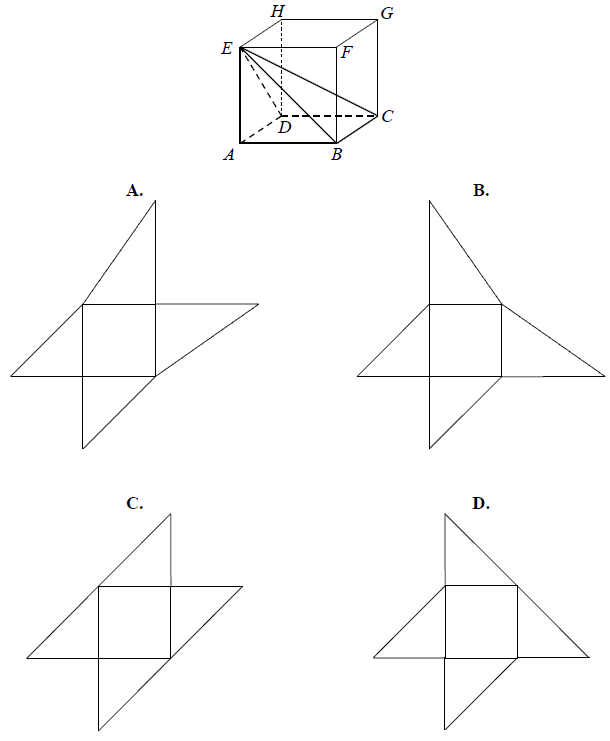
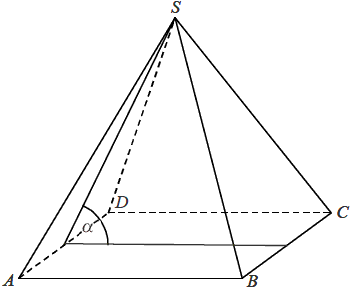
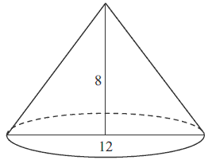

Jesteś tutaj: Kurs
zadaniowy do starej matury → Matura podstawowa z matematyki -
kurs - geometria przestrzenna
Matura podstawowa z matematyki - kurs - geometria przestrzenna
Objętość sześcianu jest równa \(27\) cm3. Jaka jest suma długości
wszystkich krawędzi tego sześcianu?
A.\( 18 \) cm
B.\( 36 \) cm
C.\( 24 \) cm
D.\( 12 \) cm
B
Objętość sześcianu, w którym przekątna ściany bocznej ma długość
\(\frac{\sqrt{2}}{4}\), jest równa
A.\( \frac{1}{64} \)
B.\( \frac{1}{16} \)
C.\( 16 \)
D.\( 64 \)
A
Suma długości krawędzi sześcianu wynosi \(24\) cm. Pole powierzchni całkowitej tego
sześcianu jest równe:
A.\( 32 \) cm2
B.\( 24 \) cm2
C.\( 16 \) cm2
D.\( 8 \) cm2
B
Objętość sześcianu jest równa \(64\). Pole powierzchni całkowitej tego sześcianu
jest równe
A.\( 512 \)
B.\( 384 \)
C.\( 96 \)
D.\( 16 \)
C
Objętość sześcianu jest równa \(27\). Pole powierzchni całkowitej tego sześcianu
jest równe
A.\( 54 \)
B.\( 18 \)
C.\( 12\sqrt{3} \)
D.\( 24\sqrt{3} \)
A
Pole powierzchni jednej ściany sześcianu jest równe \( 4 \). Objętość tego
sześcianu jest równa
A.\(6 \)
B.\(8 \)
C.\(24 \)
D.\(64 \)
B
Suma długości wszystkich krawędzi sześcianu jest równa \(24\). Objętość tego
sześcianu jest równa
A.\( 64 \)
B.\( 27 \)
C.\( 24 \)
D.\( 8 \)
D
Objętość sześcianu jest równa \(27\). Długość przekątnej tego sześcianu jest równa
A.\( 2\sqrt{2} \)
B.\( 3\sqrt{2} \)
C.\( 2\sqrt{3} \)
D.\( 3\sqrt{3} \)
D
Liczba wszystkich krawędzi graniastosłupa jest o \(10\) większa od liczby
wszystkich jego ścian bocznych. Stąd wynika, że podstawą tego graniastosłupa jest
A.czworokąt
B.pięciokąt
C.sześciokąt
D.dziesięciokąt
B
Objętość graniastosłupa prawidłowego trójkątnego o wysokości \(7\) jest równa
\(28\sqrt{3}\) . Długość krawędzi podstawy tego graniastosłupa jest równa
A.\( 2 \)
B.\( 4 \)
C.\( 8 \)
D.\( 16 \)
B
Graniastosłup ma \(15\) krawędzi. Ile wierzchołków ma ten graniastosłup?
A.\( 10 \)
B.\( 5 \)
C.\( 15 \)
D.\( 30 \)
A
Wysokość graniastosłupa prawidłowego czworokątnego jest równa \(6\), a kąt
nachylenia jego przekątnej do płaszczyzny podstawy jest równy \(60^\circ \). Długość tej przekątnej
jest równa
A.\(3\)
B.\(\sqrt{3}\)
C.\(2\sqrt{3}\)
D.\(4\sqrt{3}\)
D
W graniastosłupie prawidłowym trójkątnym wszystkie krawędzie są tej samej długości.
Suma długości wszystkich krawędzi jest równa \(90\). Wtedy pole powierzchni całkowitej tego
graniastosłupa jest równe
A.\( 300 \)
B.\( 300\sqrt{3} \)
C.\( 300+50\sqrt{3} \)
D.\( 300+25\sqrt{3} \)
C
Graniastosłup ma \(2n+6\) wierzchołków. Liczba wszystkich
krawędzi tego graniastosłupa jest równa
A.\( n+3 \)
B.\( 4n+8 \)
C.\( 6n+18 \)
D.\( 3n+9 \)
D
Dany jest graniastosłup prawidłowy trójkątny \(ABCDEF\) o podstawach \(ABC\) i
\(DEF\) i krawędziach bocznych \(AD\), \(BE\) i \(CF\). Oblicz pole trójkąta \(ABF\) wiedząc, że
\(|AB|=10\) i \(|CF|= 11\). Narysuj ten graniastosłup i zaznacz na nim
trójkąt \(ABF\).
\(P=70\)
Dany jest graniastosłup prawidłowy trójkątny \(ABCDEF\) o podstawach \(ABC\) i
\(DEF\) i krawędziach bocznych \(AD, BE\) i \(CF\) (zobacz rysunek). Długość krawędzi podstawy
\(AB\) jest równa \(8\), a pole trójkąta \(ABF\) jest równe \(52\). Oblicz objętość tego
graniastosłupa. 
\(V=176\sqrt{3}\)
W graniastosłupie prawidłowym czworokątnym \(ABCDEFGH\) przekątna \(AC\) podstawy
ma długość \(4\). Kąt \(ACE\) jest równy \(60^\circ\). Oblicz objętość ostrosłupa \(ABCDE\)
przedstawionego na poniższym rysunku. 
\(V=\frac{32\sqrt{3}}{3}\)
Przekątna graniastosłupa prawidłowego czworokątnego \(ABCDA_1B_1C_1D_1\) ma długość
\(2\sqrt{219}\), a krawędź podstawy - \(10\sqrt{2}\).  Wyznacz:
Wyznacz:
Wyznacz:- Wysokość graniastosłupa.
- Pole trójkąta \(EFG\), którego wierzchołkami są środki trzech krawędzi wychodzących z jednego wierzchołka podstawy.
\(H=2\sqrt{119}\), \(P_{\Delta EFG}=60\)
Liczba wszystkich krawędzi graniastosłupa jest równa \(24\). Wtedy liczba
wszystkich jego wierzchołków jest równa
A.\( 6 \)
B.\( 8 \)
C.\( 12 \)
D.\( 16 \)
D
W graniastosłupie prawidłowym czworokątnym wysokość graniastosłupa jest o \(4\)
krótsza od przekątnej podstawy i o \(8\) krótsza od przekątnej graniastosłupa. Oblicz sinus kąta
pomiędzy przekątną graniastosłupa a płaszczyzną podstawy.
\(\sin \alpha =\frac{3}{5}\)
W graniastosłupie prawidłowym czworokątnym \( ABCDEFGH \) połączono punkty będące
środkami krawędzi \( BC \), \( CD \), \( AD \) i \( GH \). Wyznacz objętość powstałej bryły wiedząc,
że \( \vert{DB}\vert=5\sqrt{2} \) i kąt \( DBH \) ma miarę \( 60^\circ \).
\(V=\frac{125\sqrt{6}}{12}\)
Graniastosłup ma \( 10 \) ścian. Liczba wszystkich krawędzi tego graniastosłupa
wynosi:
A.\(8 \)
B.\(16 \)
C.\(24 \)
D.\(32 \)
C
Pole powierzchni całkowitej prostopadłościanu o wymiarach \(5\times 3\times 4\) jest równe
A.\( 94 \)
B.\( 60 \)
C.\( 47 \)
D.\( 20 \)
A
Przekątna prostopadłościanu o wymiarach \(2 \times 3 \times
5\) ma długość 
A.\( \sqrt{13} \)
B.\( \sqrt{29} \)
C.\( \sqrt{34} \)
D.\( \sqrt{38} \)
D
Wykaż, że przekątna prostopadłościanu o krawędziach długości \(a, b, c\) ma długość
\(\sqrt{a^2+b^2+c^2}\).
Dany jest prostopadłościan, którego podstawą jest kwadrat o krawędzi długości \(x +
5\), a wysokość ma długość \(2x + 4\). Podaj wzór, w postaci wyrażenia algebraicznego,
opisujący pole powierzchni tego prostopadłościanu. Przekształć to wyrażenie do najprostszej postaci.
\(P=10x^2+76x+130\)
Pole powierzchni całkowitej prostopadłościanu jest równe \( 198 \). Stosunki
długości krawędzi prostopadłościanu wychodzących z tego samego wierzchołka prostopadłościanu to \(
1:2:3 \). Oblicz długość przekątnej tego prostopadłościanu.
\(3\sqrt{14}\)
Dany jest sześcian \(ABCDEFGH\). Siatką ostrosłupa czworokątnego \(ABCDE\) jest

B
Krawędź sześcianu ma długość \(9\). Długość przekątnej tego sześcianu jest równa

A.\( \sqrt[3]{9} \)
B.\( 9\sqrt{2} \)
C.\( 9\sqrt{3} \)
D.\( 9+9\sqrt{2} \)
C
Przekątna sześcianu ma długość \(3\). Pole powierzchni całkowitej tego sześcianu
jest równe
A.\( 54 \)
B.\( 36 \)
C.\( 18 \)
D.\( 12 \)
C
Pole powierzchni całkowitej sześcianu jest równe \(24\) cm2. Objętość
tego sześcianu jest równa
A.\( 8 \) cm3
B.\( 16 \) cm3
C.\( 27 \) cm3
D.\( 64 \) cm3
A
Długość krawędzi sześcianu zwiększono o \(20\%\). Oblicz, o ile procent wzrosła
objętość tego sześcianu.
\(72{,}8\%\)
Przekątna sześcianu ma długość \(9\). Oblicz pole powierzchni całkowitej tego
sześcianu.
\(162\)
Oblicz sinus kąta między przekątną sześcianu, a jego płaszczyzną podstawy.
\(\frac{\sqrt{3}}{3}\)
Krawędź sześcianu jest o \(4\) krótsza od jego przekątnej. Oblicz pole powierzchni
całkowitej tego sześcianu.
\(P_c=96+48\sqrt{3}\)
Długość krawędzi sześcianu jest o \(2\) krótsza od długości jego przekątnej. Oblicz
długość przekątnej tego sześcianu.
\(3+\sqrt{3}\)
Przekątna ściany sześcianu ma długość \( 5\sqrt{2} \). Pole powierzchni tego
sześcianu jest równe:
A.\(5 \)
B.\(25 \)
C.\(150 \)
D.\(125 \)
C
Ostrosłup ma \(18\) wierzchołków. Liczba wszystkich krawędzi tego ostrosłupa jest
równa
A.\( 11 \)
B.\( 18 \)
C.\( 27 \)
D.\( 34 \)
D
Podstawą ostrosłupa \(ABCD\) jest trójkąt \(ABC\). Krawędź \(AD\) jest wysokością
ostrosłupa (zobacz rysunek).  Oblicz
objętość ostrosłupa \(ABCD\), jeśli wiadomo, że \(AD = 12\), \(BC = 6\), \(BD = CD = 13\).
Oblicz
objętość ostrosłupa \(ABCD\), jeśli wiadomo, że \(AD = 12\), \(BC = 6\), \(BD = CD = 13\).
Oblicz
objętość ostrosłupa \(ABCD\), jeśli wiadomo, że \(AD = 12\), \(BC = 6\), \(BD = CD = 13\).\(V=48\)
Podstawą ostrosłupa \(ABCDS\) jest romb \(ABCD\) o boku długości \(4\). Kąt \(ABC\)
rombu ma miarę \(120^\circ \) oraz \(|AS|=|CS|=10\) i \(|BS|=|DS|\).
Oblicz sinus kąta nachylenia krawędzi \(BS\) do płaszczyzny podstawy ostrosłupa.
\(\sin \alpha =\sqrt{\frac{22}{23}}\)
Podstawą ostrosłupa \(ABCDW\) jest prostokąt \(ABCD\). Krawędź boczna \(DW\) jest
wysokością tego ostrosłupa. Krawędzie boczne \(AW\), \(BW\) i \(CW\) mają następujące długości:
\(|AW| = 6\), \(|BW| = 9\), \(|CW| = 7\). Oblicz objętość tego ostrosłupa. 
\(8\sqrt{10}\)
Podstawą ostrosłupa \(ABCDS\) jest kwadrat \(ABCD\). Wysokość \(SE\) ściany bocznej
\(ADS\) jest jednocześnie wysokością ostrosłupa, a punkt \(E\) jest środkiem krawędzi \(AD\) (zobacz
rysunek). Pole ściany \(ADS\) jest równe \(12\) cm2, a objętość ostrosłupa jest równa
\(48\) cm3. Oblicz miarę kąta nachylenia krawędzi bocznej \(CS\) do płaszczyzny podstawy
ostrosłupa. Wynik zaokrąglij do \(1^\circ \). 
\(31^\circ \)
Podstawą ostrosłupa \(ABCDE\) jest kwadrat \(ABCD\). Punkt \(F\) jest środkiem
krawędzi \(AD\), odcinek \(EF\) jest wysokością ostrosłupa (patrz rysunek). Oblicz objętość
ostrosłupa, jeśli wiadomo, że \(|AE|=15\), \(|BE|=17\). 
\(\frac{64\sqrt{209}}{3}\)
Jeżeli ostrosłup ma \( 10 \) krawędzi, to liczba ścian bocznych jest równa
A.\(5 \)
B.\(7 \)
C.\(8 \)
D.\(10 \)
A
Ostrosłup i graniastosłup mają równe pola podstaw i równe wysokości. Objętość
ostrosłupa jest równa \( 81\sqrt{3} \). Objętość graniastosłupa jest równa
A.\(27 \)
B.\(27\sqrt{3} \)
C.\(243 \)
D.\(243\sqrt{3} \)
D
Kąt \(\alpha \) nachylenia ściany bocznej ostrosłupa prawidłowego czworokątnego do
płaszczyzny podstawy zaznaczony jest na rysunku: 
C
W ostrosłupie prawidłowym czworokątnym krawędź boczna ma długość \(5\) cm, a
krawędź podstawy \(\sqrt{8}\) cm. Wówczas cosinus kąta nachylenia krawędzi bocznej do płaszczyzny
podstawy jest równy:
A.\( \frac{\sqrt{2}}{5} \)
B.\( 0{,}6 \)
C.\( 0{,}4 \)
D.\( \frac{\sqrt{8}}{10} \)
C
Pole podstawy ostrosłupa prawidłowego czworokątnego jest równe \(100\)
cm2, a jego pole powierzchni bocznej jest równe \(260\) cm2. Oblicz objętość
tego ostrosłupa.
\(V=400\)
W ostrosłupie prawidłowym czworokątnym \(ABCDS\) o podstawie \(ABCD\) i wierzchołku
\(S\) trójkąt \(ACS\) jest równoboczny i ma bok długości \(8\). Oblicz sinus kąta nachylenia ściany
bocznej do płaszczyzny podstawy tego ostrosłupa (zobacz rysunek). 
\(\sin \alpha =\frac{\sqrt{42}}{7}\)
Podstawą ostrosłupa prawidłowego czworokątnego \(ABCDS\) jest kwadrat \(ABCD\).
Pole trójkąta równoramiennego \(ACS\) jest równe \(120\) oraz \(|AC| : |AS| = 10 : 13\) . Oblicz
pole powierzchni bocznej tego ostrosłupa.
\(20\sqrt{313}\)
Piramida Cheopsa ma kształt ostrosłupa prawidłowego czworokątnego. Każda ściana
boczna jest nachylona do płaszczyzny podstawy ostrosłupa pod kątem \(52^\circ \), a pole powierzchni
ściany bocznej jest równe \(21\ 550 \) m2. Oblicz objętość
piramidy. Wynik zapisz w postaci \(a\cdot 10k\), gdzie \(1\le a\lt 10\) i
\(k\) jest liczbą całkowitą.
\(2{,}61\cdot 10^6\)
Piramida ma kształt ostrosłupa prawidłowego czworokątnego, którego wysokość jest
równa \(6\), a długość krawędzi bocznej jest równa \(2\sqrt{15}\). Oblicz miarę kąta nachylenia
ściany bocznej piramidy do podstawy.
\(60^\circ \)
W ostrosłupie prawidłowym czworokątnym objętość jest równa \(32\), zaś krawędź
podstawy jest równa \(4\). Wysokość tego ostrosłupa jest równa:
A.\( \frac{2}{3} \)
B.\( \frac{4}{3} \)
C.\( 2 \)
D.\( 6 \)
D
Drut o długości \(96\) cm wykorzystano w całości na wykonanie szkieletu ostrosłupa
prawidłowego czworokątnego o wszystkich krawędziach równej długości. Zaznacz na rysunku kąt
nachylenia ściany bocznej ostrosłupa do płaszczyzny podstawy i wyznacz cosinus tego kąta.
\(\cos \alpha =\frac{\sqrt{3}}{3}\)
Podstawą ostrosłupa prawidłowego jest kwadrat. Wysokość ściany bocznej tego
ostrosłupa jest równa \( 22 \), a tangens kąta nachylenia ściany bocznej ostrosłupa do płaszczyzny
jego podstawy jest równy \( \frac{4\sqrt{6}}{5} \). Oblicz objętość tego ostrosłupa. 
\(V=\frac{3200\sqrt{6}}{3}\)
Dany jest ostrosłup prawidłowy trójkątny. Pole powierzchni bocznej tego ostrosłupa
jest równe \(24\), a kąt płaski ściany bocznej przy podstawie ma miarę \(\alpha \) i
\(\operatorname{tg} \alpha =2\). Wyznacz cosinus kąta nachylenia ściany bocznej ostrosłupa do
płaszczyzny jego podstawy.
\(\frac{\sqrt{3}}{6}\)
Krawędź boczna ostrosłupa prawidłowego trójkątnego jest nachylona do płaszczyzny
podstawy pod kątem \(60^\circ\). Odległość spodka wysokości ostrosłupa od krawędzi jest równa \(4\).
Oblicz objętość tego ostrosłupa.
\(V=\frac{128\sqrt{3}}{3}\)
Objętość ostrosłupa prawidłowego trójkątnego \(ABCS\) (tak
jak na rysunku) jest równa \(72\), a promień okręgu wpisanego w podstawę \(ABC\) tego ostrosłupa jest równy \(2\). Oblicz tangens kąta między
wysokością tego ostrosłupa i jego ścianą boczną. 
\(\operatorname{tg} \alpha =\frac{\sqrt{3}}{9}\)
Pole powierzchni bocznej walca, którego podstawa ma średnicę \(4\) jest równe
\(8\pi \). Wysokość tego walca jest równa
A.\( 8 \)
B.\( 4 \)
C.\( 2 \)
D.\( \frac{1}{2} \)
C
Przekrój osiowy walca jest kwadratem o boku \(a\). Jeżeli \(r\) oznacza promień
podstawy walca, \(h\) oznacza wysokość walca, to
A.\( r+h=a \)
B.\( h-r=\frac{a}{2} \)
C.\( r-h=\frac{a}{2} \)
D.\( r^2+h^2=a^2 \)
B
Przekrój osiowy walca jest kwadratem o boku długości \(6\). Objętość tego walca
jest równa 
A.\( 18\pi \)
B.\( 54\pi \)
C.\( 108\pi \)
D.\( 216\pi \)
B
Objętość walca o wysokości \(8\) jest równa \(72\pi\). Promień podstawy tego walca
jest równy
A.\( 9 \)
B.\( 8 \)
C.\( 6 \)
D.\( 3 \)
D
Objętość walca, w którym wysokość jest trzykrotnie dłuższa od promienia podstawy,
jest równa \( 24\pi \). Zatem promień podstawy tego walca ma długość
A.\(4 \)
B.\(8 \)
C.\(2 \)
D.\(6 \)
C
Pole powierzchni całkowitej walca, którego przekrojem osiowym jest kwadrat o boku
długości \( 4 \), jest równe 
A.\(256\pi \)
B.\(128\pi \)
C.\(48\pi \)
D.\(24\pi \)
D
Pole powierzchni bocznej stożka o wysokości \(4\) i promieniu podstawy \(3\) jest
równe
A.\( 9\pi \)
B.\( 12\pi \)
C.\( 15\pi \)
D.\( 16\pi \)
C
Jeśli średnica podstawy stożka jest równa \(12\), a wysokość stożka \(8\), to kąt
\(\alpha\) między wysokością stożka, a jego tworzącą jest taki, że:
A.\( \operatorname{tg} \alpha =\frac{12}{8} \)
B.\( \operatorname{tg} \alpha =\frac{8}{12} \)
C.\( \operatorname{tg} \alpha =\frac{6}{8} \)
D.\( \operatorname{tg} \alpha =\frac{8}{6} \)
C
Przekrój osiowy stożka jest trójkątem równobocznym o boku \(a\). Objętość tego
stożka wyraża się wzorem
A.\( \frac{\sqrt{3}}{6}\pi a^3 \)
B.\( \frac{\sqrt{3}}{8}\pi a^3 \)
C.\( \frac{\sqrt{3}}{12}\pi a^3 \)
D.\( \frac{\sqrt{3}}{24}\pi a^3 \)
D
Trójkąt prostokątny o przyprostokątnych \(4\) i \(6\) obracamy wokół dłuższej
przyprostokątnej. Objętość powstałego stożka jest równa
A.\( 96\pi \)
B.\( 48\pi \)
C.\( 32\pi \)
D.\( 8\pi \)
C
Tworząca stożka ma długość \(4\) i jest nachylona do płaszczyzny podstawy pod kątem
\(60^\circ \). Objętość tego stożka jest równa
A.\( \frac{8\sqrt{3}\pi }{3} \)
B.\( \frac{10\sqrt{3}\pi }{3} \)
C.\( 3\sqrt{3}\pi \)
D.\( 16 \)
A
Tworząca stożka ma długość \( 4 \) i jest nachylona do płaszczyzny podstawy pod
kątem \( 45^\circ \). Wysokość tego stożka jest równa
A.\(2\sqrt{2} \)
B.\(16\pi \)
C.\(4\sqrt{2} \)
D.\(8\pi \)
A
Stożek powstał w wyniku obrotu trójkąta prostokątnego o przyprostokątnych \(13\) i
\(15\) wokół dłuższej przyprostokątnej. Promień podstawy tego stożka jest równy
A.\( 15 \)
B.\( 13 \)
C.\( 7{,}5 \)
D.\( 6{,}5 \)
B
Przekrój osiowy stożka jest trójkątem równobocznym o boku długości \(6\). Pole
powierzchni bocznej tego stożka jest równe: 
A.\( 12\pi \)
B.\( 18\pi \)
C.\( 27\pi \)
D.\( 36\pi \)
B
Tworząca stożka jest o \(2\) dłuższa od promienia podstawy. Pole powierzchni
bocznej tego stożka jest równe \(15\pi \). Tworząca stożka ma zatem długość
A.\( 1 \)
B.\( 5 \)
C.\( 3 \)
D.\( 15 \)
B
Powierzchnia boczna stożka po rozwinięciu na płaszczyznę jest ćwiartką koła o
promieniu \(8\) cm. Oblicz wysokość tego stożka.
\(h=2\sqrt{15}\)
Przekrój osiowy stożka jest trójkątem równoramiennym o podstawie długości \(12\).
Wysokość stożka jest równa \(8\). Oblicz pole powierzchni bocznej tego stożka. 
\(60\pi \)
Jeżeli wysokość stożka zwiększymy trzykrotnie, a długość promienia zmniejszymy trzy
razy, to objętość nowego stożka:
A.zwiększy się trzy razy
B.zmniejszy się trzy razy
C.zmniejszy się dziewięć razy
D.nie zmieni się
B
Stożek i walec mają takie same podstawy i równe pola powierzchni bocznych. Wtedy
tworząca stożka jest
A.sześć razy dłuższa od wysokości walca
B.trzy razy dłuższa od wysokości walca
C.dwa razy dłuższa od wysokości walca
D.równa wysokości walca
C
Metalowy stożek, którego tworząca o długości \(10\) jest nachylona do płaszczyzny
podstawy pod kątem \(30^\circ \), przetopiono na sześć jednakowych kulek. Oblicz promień kulki.
\(r=\frac{5}{2}\)
Kula ma objętość \(V = 288\pi\). Promień \(r\) tej kuli jest równy
A.\( 6 \)
B.\( 8 \)
C.\( 9 \)
D.\( 12 \)
A
Objętość kuli o promieniu \( \;r=\pi\;\text{dm}\; \) jest równa
A.\(\frac{4}{3}\pi\;\text{dm}^3 \)
B.\(\frac{4}{3}\pi^4\;\text{dm}^3 \)
C.\(\frac{3}{4}\pi^4\;\text{dm}^3 \)
D.\(\frac{3}{4}\pi^3\;\text{dm}^3 \)
B
W tym nagraniu wideo pokazuję jak zaznaczać różne kąty w bryłach.
Czas nagrania: 20 min.